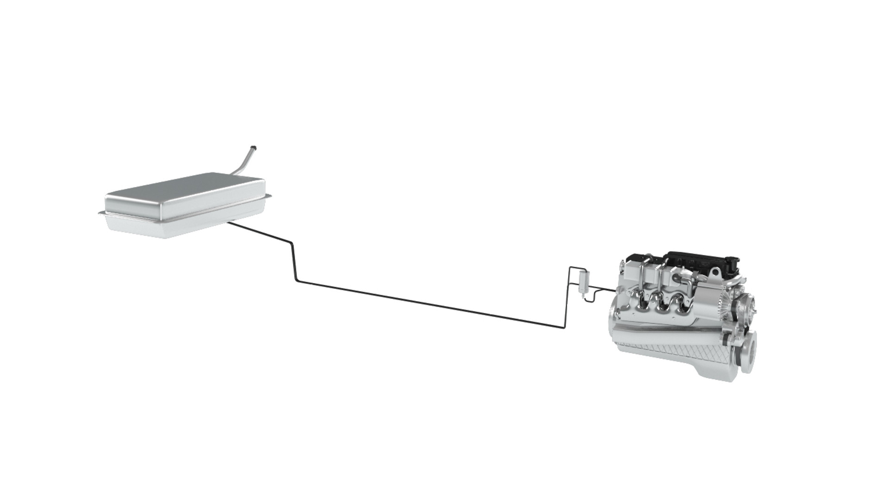
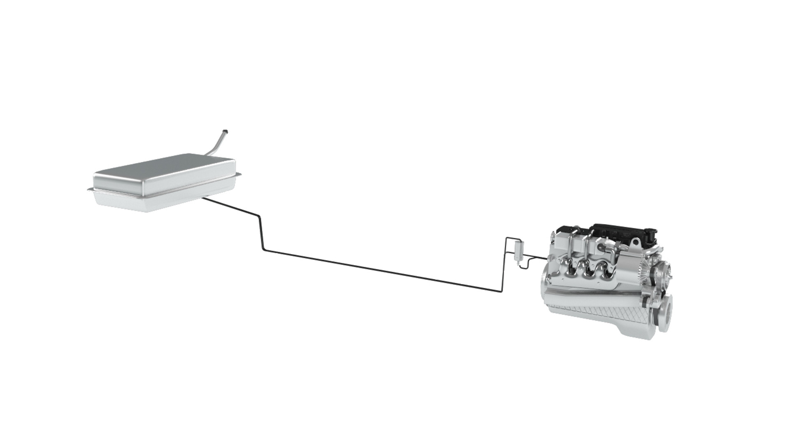
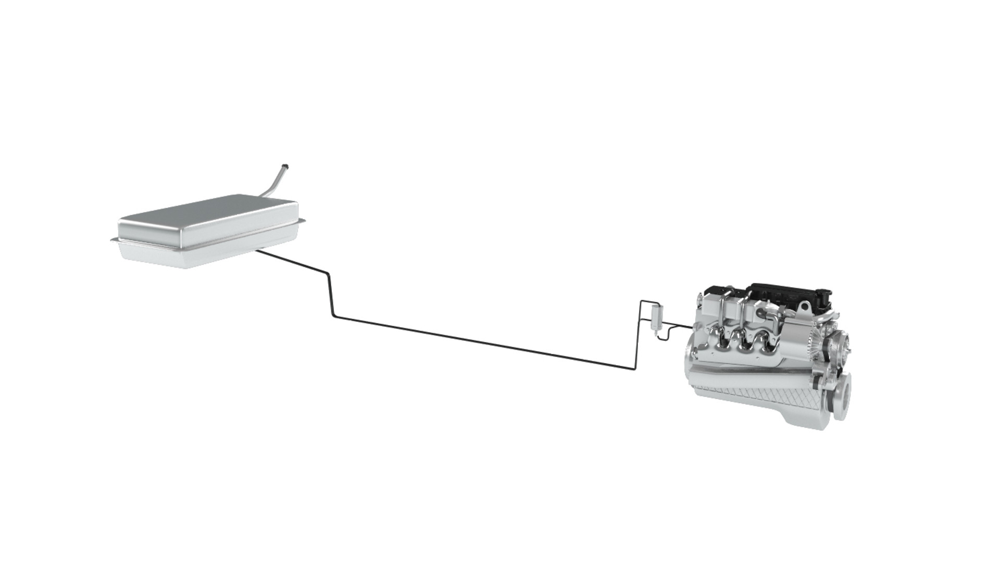

Motorul
Motorul V8
Sistemul de alimentare
Un motor de mașină este un motor cu ardere internă care convertește energia din combustibil în energie mecanică pentru a propulsa vehiculul. Iată o explicație simplificată a modului în care funcționează: 1. Aerul este aspirat în motor prin intermediul unui filtru de aer, amestecat cu combustibil și comprimat de un piston în interiorul unui cilindru. 2. Amestecul comprimat de aer și combustibil este apoi aprins prin intermediul unei bujii, determinând producerea unei explozii controlate sau a unei combustii. Această explozie generează gaze la presiune ridicată care împing pistonul în jos, creând o mișcare rotativă în arborele cotit. 3. Arborele cotit transmite apoi această mișcare prin intermediul unei transmisii către roți, propulsând mașina înainte. 4. Gazele de evacuare sunt apoi expulzate din motor prin intermediul unui sistem de evacuare. Acest proces este repetat de mai multe ori pe minut, fiecare cilindru declanșându-se într-o secvență specifică pentru a menține funcționarea lină a motorului. Numărul de cilindri într-un motor variază, dar majoritatea mașinilor moderne au patru, șase sau opt cilindri. Mai multe cilindri înseamnă de obicei mai multă putere și o funcționare mai lină. Motoarele moderne au, de asemenea, componente suplimentare, cum ar fi injecția electronică de combustibil, senzori și module de control computerizate, pentru a optimiza eficiența combustibilului, reduce emisiile și îmbunătăți performanța.
Sistemul de alimentare cu combustibil este o componentă esențială a funcționării unui automobil. Este responsabil pentru furnizarea combustibilului către motor, care îl convertește în energie mecanică pentru a alimenta mașina. Sistemul de alimentare cu combustibil este format din mai multe componente care lucrează împreună pentru a asigura o furnizare adecvată a combustibilului. Rezervorul de combustibil este recipientul care conține combustibilul. De obicei, se află în partea din spate a mașinii și are o capacitate cuprinsă între 10 și 25 de galoni. Pompa de combustibil este responsabilă pentru mutarea combustibilului de la rezervor la motor. De obicei, este o pompă electrică amplasată în interiorul sau în exteriorul rezervorului de combustibil. Filtrul de combustibil este o altă componentă importantă a sistemului de alimentare cu combustibil. Este proiectat pentru a elimina impuritățile și contaminanții din combustibil înainte ca acesta să ajungă la motor. Injectorul de combustibil este responsabil pentru pulverizarea combustibilului în cilindrii motorului la momentul potrivit și în cantitatea corectă. Acest lucru este esențial pentru a asigura o ardere adecvată și performanță a motorului. Carburatorul este un tip mai vechi de sistem de alimentare cu combustibil care este încă folosit în unele mașini. Acesta amestecă combustibilul cu aerul și îl livrează la cilindrii motorului. Cu toate acestea, majoritatea mașinilor moderne folosesc sisteme de injecție de combustibil, care sunt mai eficiente și mai precise. În general, sistemul de alimentare cu combustibil joacă un rol crucial în performanța și fiabilitatea unei mașini. Este necesară întreținere și îngrijire adecvată pentru a menține funcționarea optimă. Înlocuirea regulată a filtrului de combustibil și curățarea sistemului de alimentare cu combustibil pot ajuta la prevenirea problemelor și la prelungirea duratei de viață a sistemului de alimentare cu combustibil. În plus, utilizarea de combustibil de înaltă calitate și evitarea de a conduce mașina cu rezervorul gol poate ajuta, de asemenea, la prevenirea deteriorării sistemului de alimentare cu combustibil.

 
